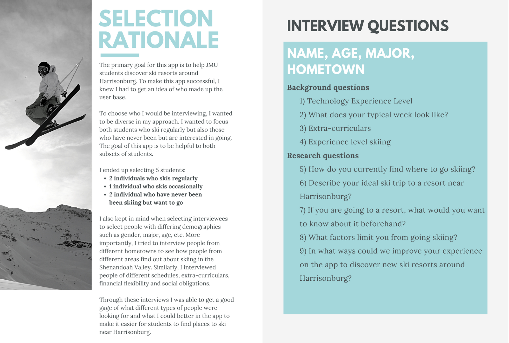
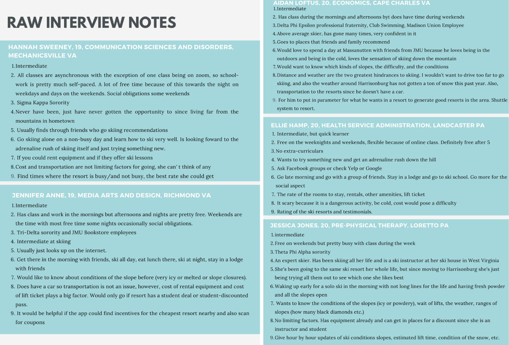
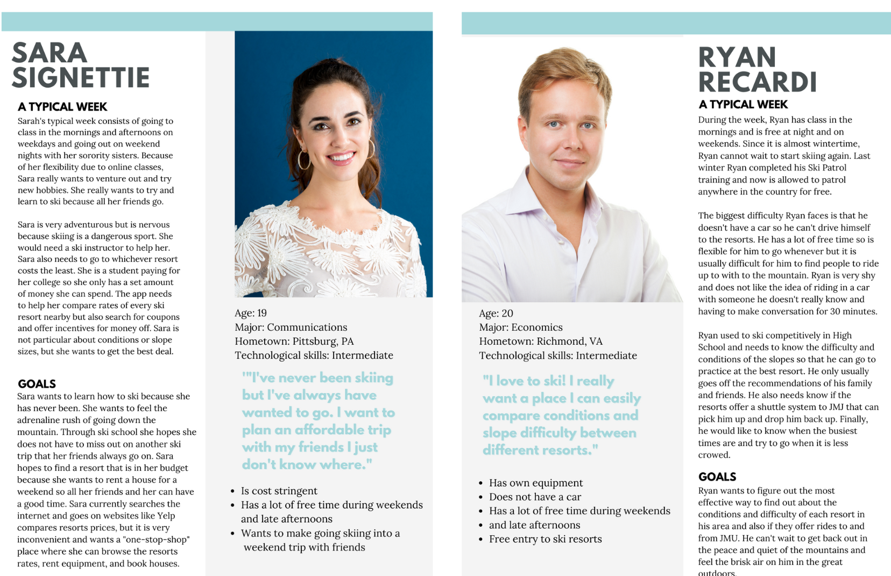
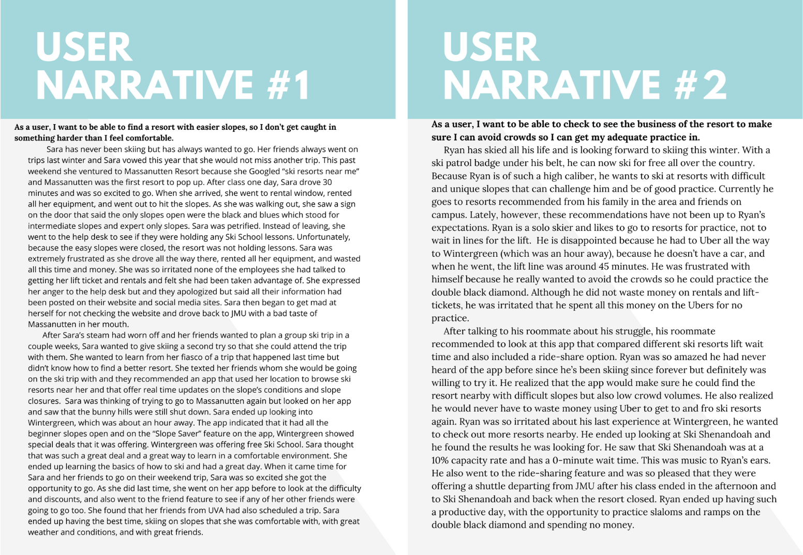
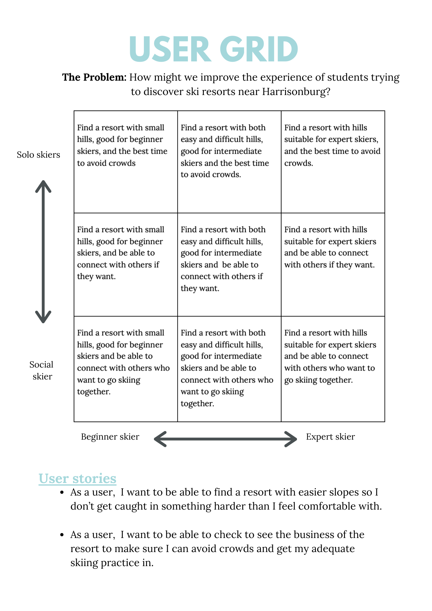

"How might we improve the experience of students trying to discover ski resorts near Harrisonburg"
Research Questions:
How do you currently find where to go skiing?
Describe your ideal ski trip to a resort near Harrisonburg?
If you are going to a resort, what would you want to know about it beforehand?
What factors limit you from going skiing?
In what ways could we improve your experience on the app to discover new ski resorts around Harrisonburg?
Rationale
When I thought about how to address the design question, I brainstormed important factors that a user would want to know when looking for places to ski around Harrisonburg. Due to the thrill of going down a mountain and the agility that skiing requires, I feel as though college-aged students make up a wide portion of the demographic who like/would like to ski. Conveniently, JMU is located in the heart of Shenandoah Valley where numerous ski resorts are easily accessible and who also offer student discounts. When thinking, I realized that many incoming students, especially those who are out-of-state, do not realize all their options on where they can ski. Therefore, I hypothesized that students with different backgrounds, experience levels, and schedules would like an easier way to discover ski resorts near Harrisonburg.
I decided to interview 5 people directly using open-ended questions in order to get the most amount of information that I could. I chose this option over a survey because through interviewing I was able to ask follow-up questions which led me to see what parts they were really passionate about.
When asking interviewees my research questions, such as to describe their ideal ski trip, I was able to a really good grasp on their primary motivations and goals. Through these interviews I was also able to get a lot of logistical questions answered, which only made my research more fruitful. With this information I was able to have a substantial bank of information that I was able to analyze.


Interview Findings:
From the interview process, I was able to analyze the data to find patterns of behavior and what JMU students need in to discover ski resorts near Harrisonburg.
All the schedules of the participants lined up, regardless of extra-curriculars, with weekday nights and weekend days being free. This was most likely due to JMU's decision to move all classes online which led to most classes meeting asynchronously. All participants stated their ideal time to go skiing would fall in this free-time time period.
The participants answers varied on where they usually find where to go skiing. Hannah and Aidan rely on family and friend recommendations while Jennifer and Ellie rely more looking up places on the internet such as Google or Yelp and then comparing the resorts from there. Jessica goes for the "trial and error" approach where she likes to try the resorts herself and judge from there. Jessica is able to do this because she receives discounts due to her ski instructor pass, however Ellie and Jennifer cannot because they are more cost stringent.
As stated before, cost of rentals, lift-tickets, lodging etc. played a hinderance to some participants. Skiing is not a cheap activity. Likewise, some participants stated transportation as another hindrance, as most ski resorts are in a 30-minute radius from Harrisonburg. An uncontrollable factor was expressed as Aidan said the weather has recently been a hindrance due to low amounts of snow in Harrisonburg.
There were also multiple motives of going skiing that became evident through this process varying for social entertainment, exercise, getting an adrenaline rush, and improvement on ski skills.
User Personas:

User Narratives:


Design Requirements:
The app must have all basic information about all the ski resorts in the area (hours, pictures of the slopes, typical busy times, rental information/price, house booking information/price)
The app must have social network feature to be able to link up with friends on the app and see the activity of who of your friends are there/who or your friends are going/when your friends are going.
The app must show the lowest rates at all resorts nearby and also the app will offer coupons exclusive to the app.
The app must have real time updates of all ski resorts nearby such as slope conditions, usual ski lift traffic, slopes open, and weather at the top of the mountain.
The app must have a ride sharing feature to coordinate people going to and from JMU to resorts.